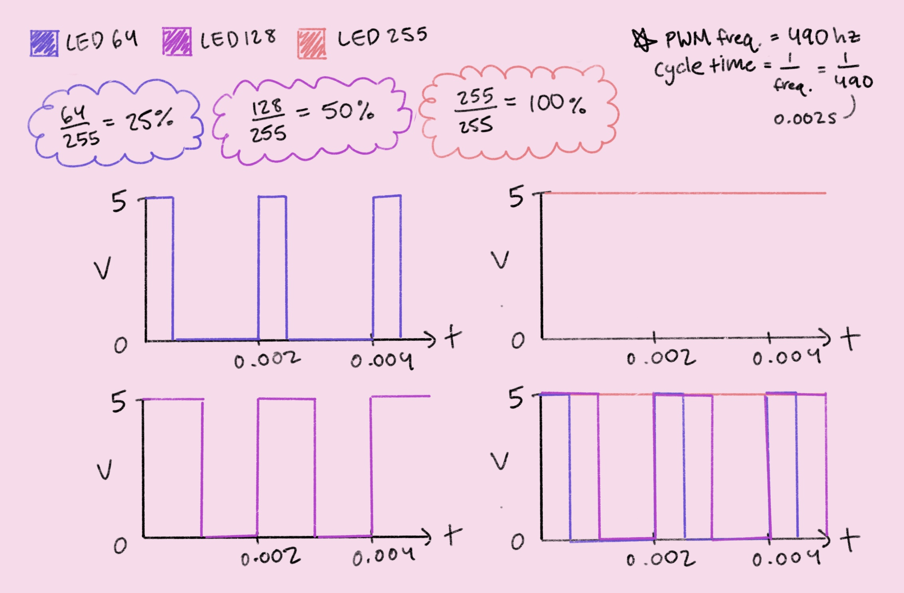

The circuit schematic shows three pairs of 220Ω resistors and red LED lights connected to
digital pins 3, 7, and 8 on an Arduino Uno. There is also a 10kΩ resistor that serves as a
pull-down resistor for a pushbutton switch connected to digital pin 2. The 220Ω resistors
were selected to limit the current through a single LED to 20mA or less (minimum resistance
needed is 160Ω), while the 10k resistor is recommended by the official Arduino documentation
for use with pins configured as input to pull voltage down to ground when there is no
external input.
All three LEDs are connected to their own digital pins to ensure that they are able to
operate independently. One LED is connected to a digital pin (pin 3) that doubles as a PWM
pin so it can be set to fade in and out using analog values. The pushbutton is connected to
a digital pin that has been configured as input so its state can be read and used to turn
each LED on or off.

const int buttonPin = 2; // number of pushbutton pin
const int fadePin = 3; // number of fading LED pin
int buttonState = 0; // variable for reading pushbutton status
void setup() {
// initialize digital pin 7 as an output
pinMode(7, OUTPUT);
// initialize digital pin 8 as an output
pinMode(8, OUTPUT);
// initialize pushbutton pin as an input:
pinMode(buttonPin, INPUT);
}
void loop() {
// read state of pushbutton value:
buttonState = digitalRead(buttonPin);
// check if pushbutton is pressed (pressed means buttonState is HIGH)
if (buttonState == HIGH) {
digitalWrite(7, HIGH); // turn LED on by making voltage of digital pin 7 HIGH (5V)
digitalWrite(8, HIGH); // turn LED on by making voltage of digital pin 8 HIGH
// fade LED in by increasing duty cycle of PWM pin 3 from min to max in increments of 5 points
for (int fadeValue = 0; fadeValue <= 255; fadeValue += 5) {
analogWrite(fadePin, fadeValue); // set duty cycle of PWM pin 3 to current fadeValue
delay(10); // wait for 10 milliseconds
}
// fade LED out by decreasing duty cycle of PWM pin 3 from max to min in increments of 5 points
for(int fadeValue = 255; fadeValue >= 0; fadeValue -= 5) {
analogWrite(fadePin, fadeValue); // set duty cycle of PWM pin 3 to current fadeValue
delay(10); // wait for 10 milliseconds
}
// buttonState is LOW
} else {
digitalWrite(7, LOW); // turn LED off by making voltage of digital pin 7 LOW (0V)
digitalWrite(8, LOW); // turn LED off by making voltage of digital pin 8 LOW
analogWrite(fadePin, 0); // set duty cycle of PWM pin 3 to value of 0
}
}

The LEDs are programmed to turn on when the pushbutton is pressed. One LED fades in and out,
and the other two hold solid. Something interesting about the circuit's behavior (when the
button is unpressed) is that the LEDs only turn off after the fading LED completes its
current fade cycle. This is probably because the fading is controlled by two for-loops.
1. The analogWrite function takes two parameters: a pin and a duty cycle value that ranges
from 0 to 255. When set to 255, the Arduino provides 5V of power 100% of the time, resulting
in a constant voltage of ~5V across an LED. However, with a duty cycle of 128, the Arduino
supplies 5V of power only 50% of the time, causing the average voltage across an LED to drop
to ~2.5V. This same principle applies when the duty cycle is set to 64, where 5V of power is
supplied only 25% of the time, leading to an average voltage of ~1.25V across an LED. In
reality, average voltage across an LED may also be affected by its specific voltage drop.
This graph depicts average voltage over time.

This graph depicts voltage over two PWM cycles.

2. To answer this question, I started by calculating the current drawn by each LED. Each
220Ω resistor/red LED pair draws 14.5mA, given 5V of power and a voltage drop of 1.8V. While
it is likely that the fading LED draws less than 14.5mA, for the sake of simplicity, it is
being treated as a solid LED that is always on. A 1200mAh battery will provide 1200mA for
one hour, 120mA for 10 hours, and so on. So, for three LEDs drawing 14.5mA each, the battery
should provide 45.3mA for a total of 27.59 hours (or more if the fading LED has an average
current less than 14.5mA).